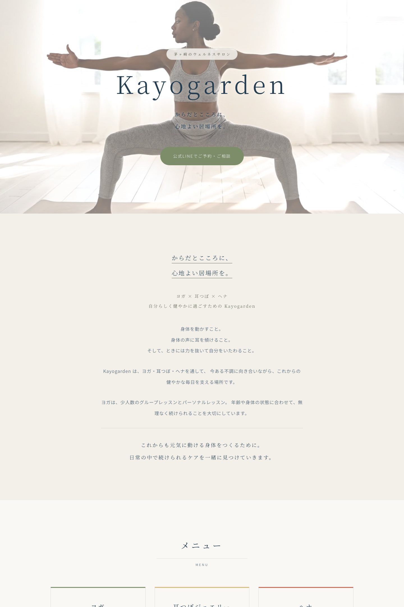
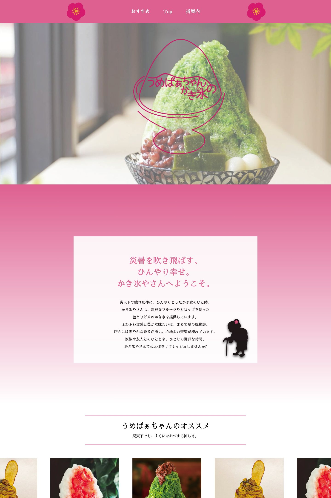
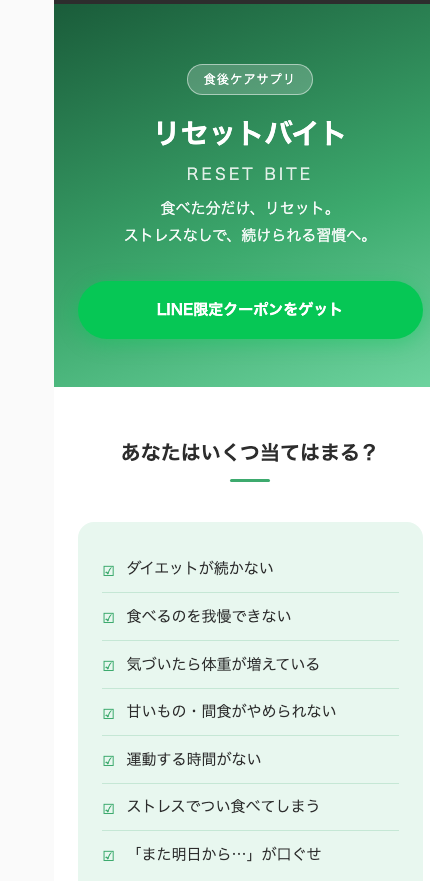
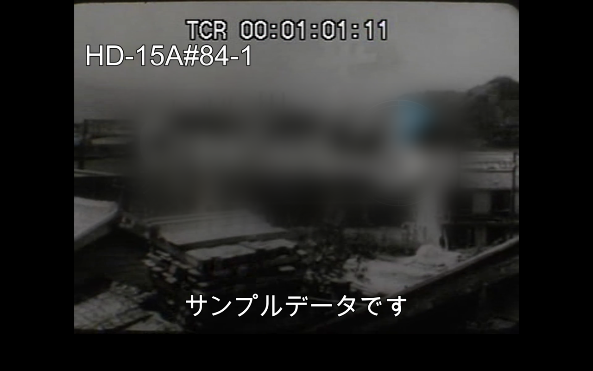
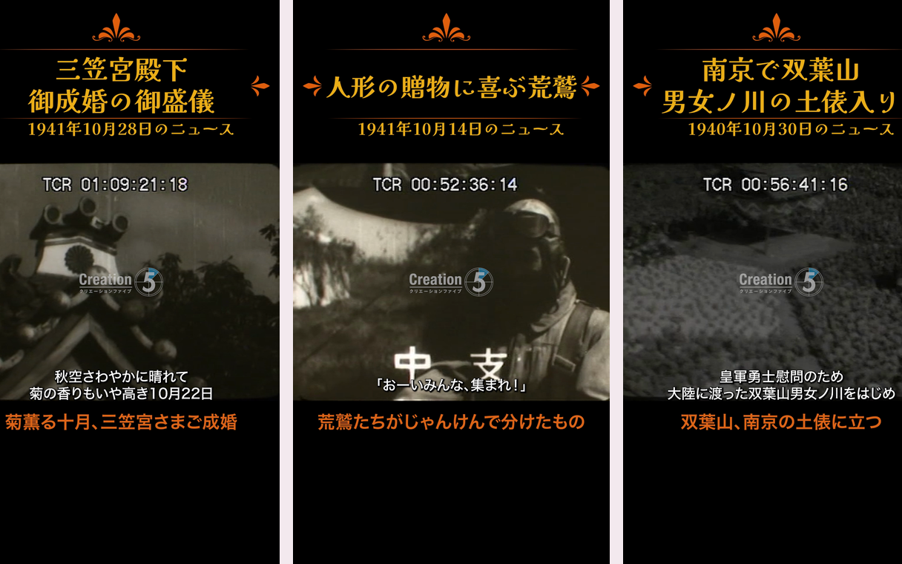

手をつける前に、決まりと制約を洗い出す
知らない決まりや、初めて使うサービスの制約は、作りはじめる前に調べます。実案件では、予約機能の料金体系やアカウントの引き渡し方を先に確認して、あとで詰まらない形を選びました。デザインの流行りも、感覚で追わずに一度調べてから取り入れるようにしています。調べる時間が短くなったぶん、何を採るかを考える時間が増えました。
WEB DESIGNER ／ Lv.25
YUME SUZUKI
PORTFOLIO 2026
メニューやチラシ、サイトの制作、動画編集、公式LINEの構築まで。 作業の効率化と質の向上のためにAIを取り入れ、AIの使い方も自分の技術も学び続けています。
01 — 06

茅ヶ崎のヨガ・耳つぼ・ヘナのサロン。ブランディング未確定・写真も揃わない段階で「今すぐ人に見せられる1枚」を求められた案件。未確定の項目を“準備中”の枠として設計に組み込み、後から埋められる構造にしました。
詳しく見る →
同じデザインを「ノーコードで組んだ版」と「HTML/CSSで書いた版」の2通りで制作。ツールによって何が変わるかを自分の手で確かめた課題です。ショップカードとチラシまで一貫して制作しました。
詳しく見る →
架空のサプリメント商品を題材に、Figmaで設計してからコーディングしたスマートフォン向けLP。共感チェック→コンセプト→成分→CTAという、購買までの導線設計を練習した作品です。
実物を見る →

コンセプトの異なる3店舗のドリンクメニューとイベントフライヤー。店の世界観に合わせて配色と書体を変え、実際に店頭で使われる印刷物として納品しました。
詳しく見る →
映像制作会社が所蔵する昭和のニュース映像を、長い元データからニュース1題ごとに切り出し、透かしと管理番号を焼き込んでYouTubeへ公開。さらに管理表・YouTube・サイトのデータベースの3か所を自動で紐付けて、人の転記をなくしました。14,305行の映像データと突き合わせながら進めています。
詳しく見る →
14,305行のアーカイブから毎月35本を選び、縦型に編集して毎日18時に公開しています。選ぶ・作る・出すの全部を一人で回すために、編集の下ごしらえを半自動化しました。
詳しく見る →AI
ひとりで請けている以上、知らないことも、手の回らない時間もあります。 そこをAIで埋めて、決めることと、確かめることに自分の時間を使っています。
知らない決まりや、初めて使うサービスの制約は、作りはじめる前に調べます。実案件では、予約機能の料金体系やアカウントの引き渡し方を先に確認して、あとで詰まらない形を選びました。デザインの流行りも、感覚で追わずに一度調べてから取り入れるようにしています。調べる時間が短くなったぶん、何を採るかを考える時間が増えました。
1/ 5
About
専門学校でインテリアデザインを学ぶなかでAdobe Illustratorに出会い、独学を重ねて知人からの依頼を受けるようになりました。その後Webデザインを学び直し、現在はHTML/CSSでの制作まで担当しています。
いまの主な仕事は、昭和の記録映像を所蔵する会社での映像の切り出しと公開です。1万件を超えるデータを扱ううちに、手作業を仕組みに置き換えることの価値を知りました。デザインと、それを回し続ける仕組みの両方を見られることが強みだと思っています。
小学校高学年から高校2年まで競泳の選手として、その後は水泳インストラクターとして指導にあたっていました。続けること・人に伝えることの基礎はここで身につけています。
| 2021.3 | 町田デザイン専門学校 インテリアデザイン学科 卒業 |
|---|---|
| 2018.4 — 2020.9 | 水泳指導（横浜市営金沢プール ほか） |
| 2020.4 — 2020.9 | 株式会社NEWLEVEL／デザイン・EC・経理を一人で担当 |
| 2020.10 — 2023.9 | 株式会社beehive／接客・スタッフ教育・メニュー制作 |
| 2024.4 — | 映像制作会社（業務委託）／映像の切り出し・書き出し・YouTubeへの公開 |
| 2026.2 — 2026.8 | ForestDali／公式LINE顧客対応 |
| 2026.8 — 2026.9 | Kayo Garden／公式LINE構築・サイト制作 |
Contact
制作したサイトのソースコードを公開しています。
お仕事のご相談は、ご応募先の窓口またはGitHubのプロフィールからご連絡ください。